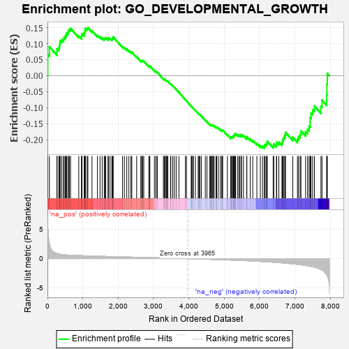
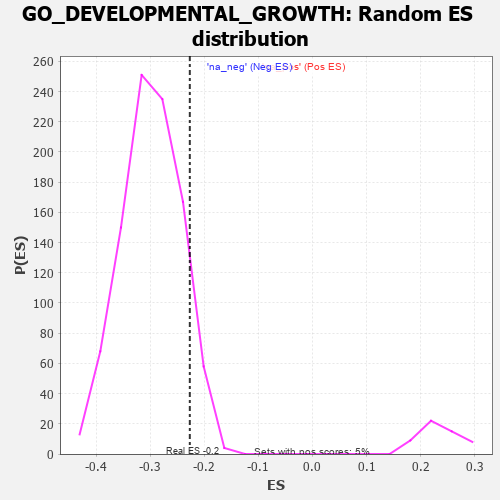

| | | Dataset | 7d |
| Phenotype | NoPhenotypeAvailable |
| Upregulated in class | na_neg |
| GeneSet | GO_DEVELOPMENTAL_GROWTH |
| Enrichment Score (ES) | -0.22680146 |
| Normalized Enrichment Score (NES) | -0.75887907 |
| Nominal p-value | 0.91331923 |
| FDR q-value | 0.9960534 |
| FWER p-Value | 1.0 |
Table: GSEA Results Summary

Fig 1: Enrichment plot: GO_DEVELOPMENTAL_GROWTH
Profile of the Running ES Score & Positions of GeneSet Members on the Rank Ordered List
| PROBE | GENE SYMBOL | GENE_TITLE | RANK IN GENE LIST | RANK METRIC SCORE | RUNNING ES | CORE ENRICHMENT | | 1 | SYT2 | | | 8 | 5.577 | 0.0659 | No |
| 2 | DCLK1 | | | 55 | 2.532 | 0.0905 | No |
| 3 | TBX20 | | | 267 | 0.880 | 0.0740 | No |
| 4 | ULK1 | | | 272 | 0.875 | 0.0840 | No |
| 5 | ARX | | | 322 | 0.782 | 0.0871 | No |
| 6 | DLL1 | | | 337 | 0.760 | 0.0944 | No |
| 7 | GSK3A | | | 351 | 0.745 | 0.1017 | No |
| 8 | LGR6 | | | 360 | 0.738 | 0.1095 | No |
| 9 | NBN | | | 405 | 0.696 | 0.1123 | No |
| 10 | ERCC1 | | | 453 | 0.660 | 0.1142 | No |
| 11 | LRP1 | | | 470 | 0.648 | 0.1199 | No |
| 12 | MYOD1 | | | 504 | 0.628 | 0.1232 | No |
| 13 | HTRA2 | | | 527 | 0.621 | 0.1278 | No |
| 14 | SRF | | | 542 | 0.615 | 0.1334 | No |
| 15 | CCNB1 | | | 581 | 0.601 | 0.1358 | No |
| 16 | RAPH1 | | | 592 | 0.597 | 0.1417 | No |
| 17 | TAF8 | | | 622 | 0.587 | 0.1450 | No |
| 18 | EYS | | | 654 | 0.575 | 0.1479 | No |
| 19 | RMI1 | | | 886 | 0.509 | 0.1245 | No |
| 20 | CTR9 | | | 964 | 0.492 | 0.1205 | No |
| 21 | ZPR1 | | | 967 | 0.491 | 0.1261 | No |
| 22 | WDR48 | | | 975 | 0.489 | 0.1311 | No |
| 23 | AKT1 | | | 1040 | 0.476 | 0.1286 | No |
| 24 | YAP1 | | | 1041 | 0.475 | 0.1343 | No |
| 25 | MEF2C | | | 1054 | 0.473 | 0.1385 | No |
| 26 | XPA | | | 1070 | 0.469 | 0.1422 | No |
| 27 | RAI1 | | | 1071 | 0.469 | 0.1478 | No |
| 28 | G6PC | | | 1121 | 0.459 | 0.1471 | No |
| 29 | EMX1 | | | 1143 | 0.455 | 0.1498 | No |
| 30 | WDR36 | | | 1260 | 0.437 | 0.1402 | No |
| 31 | CARM1 | | | 1413 | 0.408 | 0.1256 | No |
| 32 | IFRD1 | | | 1486 | 0.392 | 0.1211 | No |
| 33 | SOS1 | | | 1547 | 0.384 | 0.1180 | No |
| 34 | RNF6 | | | 1605 | 0.373 | 0.1152 | No |
| 35 | CDK4 | | | 1626 | 0.370 | 0.1171 | No |
| 36 | RXRA | | | 1647 | 0.365 | 0.1189 | No |
| 37 | ERCC2 | | | 1712 | 0.354 | 0.1150 | No |
| 38 | MEIS1 | | | 1723 | 0.351 | 0.1179 | No |
| 39 | LLPH | | | 1768 | 0.343 | 0.1164 | No |
| 40 | SGPL1 | | | 1820 | 0.334 | 0.1139 | No |
| 41 | GATA4 | | | 1837 | 0.330 | 0.1158 | No |
| 42 | RTF1 | | | 1844 | 0.329 | 0.1190 | No |
| 43 | SMAD4 | | | 1860 | 0.326 | 0.1210 | No |
| 44 | ISLR2 | | | 2124 | 0.287 | 0.0907 | No |
| 45 | DDR1 | | | 2176 | 0.280 | 0.0875 | No |
| 46 | CREB1 | | | 2243 | 0.269 | 0.0823 | No |
| 47 | WASF1 | | | 2303 | 0.259 | 0.0779 | No |
| 48 | SIN3A | | | 2361 | 0.251 | 0.0736 | No |
| 49 | PELO | | | 2386 | 0.247 | 0.0735 | No |
| 50 | SALL4 | | | 2523 | 0.223 | 0.0588 | No |
| 51 | ATRN | | | 2640 | 0.207 | 0.0464 | No |
| 52 | ARID2 | | | 2664 | 0.204 | 0.0459 | No |
| 53 | DSCAM | | | 2689 | 0.200 | 0.0452 | No |
| 54 | KDM6A | | | 2690 | 0.200 | 0.0476 | No |
| 55 | SLIT2 | | | 2724 | 0.195 | 0.0457 | No |
| 56 | WDTC1 | | | 2865 | 0.172 | 0.0299 | No |
| 57 | MTM1 | | | 2893 | 0.168 | 0.0284 | No |
| 58 | FGFR2 | | | 2895 | 0.167 | 0.0303 | No |
| 59 | BRCA2 | | | 3024 | 0.146 | 0.0156 | No |
| 60 | RBBP6 | | | 3066 | 0.141 | 0.0121 | No |
| 61 | MAP2 | | | 3074 | 0.140 | 0.0129 | No |
| 62 | GPX1 | | | 3109 | 0.135 | 0.0101 | No |
| 63 | CTDP1 | | | 3279 | 0.109 | -0.0102 | No |
| 64 | SMAD3 | | | 3303 | 0.105 | -0.0119 | No |
| 65 | PARP2 | | | 3316 | 0.103 | -0.0122 | No |
| 66 | SMAD1 | | | 3337 | 0.099 | -0.0136 | No |
| 67 | FMN1 | | | 3363 | 0.095 | -0.0156 | No |
| 68 | SMAD7 | | | 3369 | 0.093 | -0.0151 | No |
| 69 | GAS2 | | | 3392 | 0.090 | -0.0169 | No |
| 70 | MED1 | | | 3405 | 0.089 | -0.0174 | No |
| 71 | CDK5 | | | 3480 | 0.080 | -0.0259 | No |
| 72 | GLI1 | | | 3489 | 0.079 | -0.0259 | No |
| 73 | PIN1 | | | 3543 | 0.069 | -0.0319 | No |
| 74 | TNS2 | | | 3588 | 0.062 | -0.0368 | No |
| 75 | SBDS | | | 3640 | 0.053 | -0.0427 | No |
| 76 | HSF1 | | | 3718 | 0.039 | -0.0521 | No |
| 77 | NIPBL | | | 3900 | 0.010 | -0.0752 | No |
| 78 | CCM2 | | | 3933 | 0.005 | -0.0792 | No |
| 79 | SFRP2 | | | 4065 | -0.018 | -0.0958 | No |
| 80 | CSF1 | | | 4074 | -0.019 | -0.0965 | No |
| 81 | WNT2 | | | 4084 | -0.021 | -0.0974 | No |
| 82 | MTOR | | | 4114 | -0.025 | -0.1009 | No |
| 83 | ABL1 | | | 4125 | -0.027 | -0.1018 | No |
| 84 | UNC79 | | | 4184 | -0.039 | -0.1088 | No |
| 85 | WDR11 | | | 4262 | -0.052 | -0.1180 | No |
| 86 | WNT11 | | | 4282 | -0.056 | -0.1198 | No |
| 87 | TBX2 | | | 4303 | -0.060 | -0.1216 | No |
| 88 | SYT17 | | | 4310 | -0.061 | -0.1217 | No |
| 89 | ADRB2 | | | 4352 | -0.068 | -0.1261 | No |
| 90 | ERCC6 | | | 4464 | -0.087 | -0.1393 | No |
| 91 | ILK | | | 4510 | -0.096 | -0.1439 | No |
| 92 | SYT4 | | | 4590 | -0.116 | -0.1526 | No |
| 93 | GATA3 | | | 4614 | -0.120 | -0.1541 | No |
| 94 | RAB21 | | | 4620 | -0.122 | -0.1533 | No |
| 95 | TAF10 | | | 4652 | -0.128 | -0.1557 | No |
| 96 | FGFR3 | | | 4656 | -0.129 | -0.1546 | No |
| 97 | LIMK1 | | | 4684 | -0.136 | -0.1564 | No |
| 98 | PTK7 | | | 4687 | -0.136 | -0.1550 | No |
| 99 | LHX2 | | | 4716 | -0.143 | -0.1569 | No |
| 100 | POC1A | | | 4768 | -0.151 | -0.1616 | No |
| 101 | PIM1 | | | 4776 | -0.152 | -0.1607 | No |
| 102 | RTN4 | | | 4783 | -0.154 | -0.1596 | No |
| 103 | BIN3 | | | 4832 | -0.165 | -0.1637 | No |
| 104 | SLIT3 | | | 4890 | -0.175 | -0.1689 | No |
| 105 | ATRX | | | 4929 | -0.184 | -0.1716 | No |
| 106 | EP300 | | | 4941 | -0.186 | -0.1708 | No |
| 107 | PRKDC | | | 4955 | -0.189 | -0.1702 | No |
| 108 | DRD2 | | | 5088 | -0.221 | -0.1844 | No |
| 109 | HDAC6 | | | 5183 | -0.244 | -0.1935 | No |
| 110 | SMO | | | 5195 | -0.247 | -0.1920 | No |
| 111 | ATM | | | 5210 | -0.249 | -0.1908 | No |
| 112 | TNKS2 | | | 5239 | -0.254 | -0.1913 | No |
| 113 | PTEN | | | 5262 | -0.261 | -0.1910 | No |
| 114 | CDK1 | | | 5264 | -0.262 | -0.1880 | No |
| 115 | RIMS2 | | | 5272 | -0.265 | -0.1857 | No |
| 116 | MAGI2 | | | 5295 | -0.269 | -0.1853 | No |
| 117 | FKBP8 | | | 5296 | -0.270 | -0.1820 | No |
| 118 | CD9 | | | 5319 | -0.277 | -0.1815 | No |
| 119 | CPNE9 | | | 5374 | -0.289 | -0.1850 | No |
| 120 | LATS1 | | | 5412 | -0.298 | -0.1861 | No |
| 121 | IST1 | | | 5442 | -0.305 | -0.1862 | No |
| 122 | STIL | | | 5483 | -0.314 | -0.1875 | No |
| 123 | ACTN3 | | | 5486 | -0.315 | -0.1840 | No |
| 124 | FGFR1 | | | 5543 | -0.332 | -0.1872 | No |
| 125 | ASPM | | | 5637 | -0.358 | -0.1948 | No |
| 126 | G6PD | | | 5638 | -0.358 | -0.1905 | No |
| 127 | SLIT1 | | | 5735 | -0.387 | -0.1982 | No |
| 128 | BBS4 | | | 5806 | -0.407 | -0.2022 | No |
| 129 | STK11 | | | 5922 | -0.443 | -0.2117 | No |
| 130 | TLL2 | | | 6020 | -0.478 | -0.2183 | No |
| 131 | DBNL | | | 6084 | -0.501 | -0.2204 | No |
| 132 | IFT80 | | | 6135 | -0.515 | -0.2206 | Yes |
| 133 | STK4 | | | 6145 | -0.518 | -0.2156 | Yes |
| 134 | KLF2 | | | 6182 | -0.532 | -0.2138 | Yes |
| 135 | INSR | | | 6204 | -0.538 | -0.2100 | Yes |
| 136 | SMAD2 | | | 6216 | -0.541 | -0.2049 | Yes |
| 137 | BBS2 | | | 6383 | -0.608 | -0.2189 | Yes |
| 138 | CDKL3 | | | 6401 | -0.618 | -0.2136 | Yes |
| 139 | SOX2 | | | 6477 | -0.652 | -0.2154 | Yes |
| 140 | DYSF | | | 6481 | -0.654 | -0.2080 | Yes |
| 141 | DDR2 | | | 6542 | -0.681 | -0.2075 | Yes |
| 142 | WWTR1 | | | 6631 | -0.729 | -0.2100 | Yes |
| 143 | PTPRS | | | 6646 | -0.738 | -0.2029 | Yes |
| 144 | TMED2 | | | 6665 | -0.746 | -0.1963 | Yes |
| 145 | PAK1 | | | 6691 | -0.757 | -0.1904 | Yes |
| 146 | GSK3B | | | 6719 | -0.768 | -0.1846 | Yes |
| 147 | NPY1R | | | 6732 | -0.776 | -0.1768 | Yes |
| 148 | GHSR | | | 6937 | -0.894 | -0.1922 | Yes |
| 149 | CPNE5 | | | 7070 | -0.977 | -0.1974 | Yes |
| 150 | RYK | | | 7102 | -1.000 | -0.1894 | Yes |
| 151 | SYT1 | | | 7148 | -1.033 | -0.1827 | Yes |
| 152 | AR | | | 7169 | -1.046 | -0.1727 | Yes |
| 153 | MSX2 | | | 7299 | -1.171 | -0.1752 | Yes |
| 154 | PLAC8 | | | 7355 | -1.223 | -0.1676 | Yes |
| 155 | CELA1 | | | 7399 | -1.265 | -0.1579 | Yes |
| 156 | KLF5 | | | 7429 | -1.304 | -0.1459 | Yes |
| 157 | LHX1 | | | 7431 | -1.305 | -0.1304 | Yes |
| 158 | MMP13 | | | 7453 | -1.340 | -0.1170 | Yes |
| 159 | PPIB | | | 7499 | -1.396 | -0.1060 | Yes |
| 160 | DCC | | | 7550 | -1.470 | -0.0947 | Yes |
| 161 | PLS1 | | | 7734 | -1.855 | -0.0959 | Yes |
| 162 | PDE4D | | | 7764 | -1.944 | -0.0763 | Yes |
| 163 | CAV3 | | | 7896 | -2.739 | -0.0602 | Yes |
| 164 | PLCB1 | | | 7904 | -2.841 | -0.0269 | Yes |
| 165 | PI16 | | | 7914 | -2.948 | 0.0073 | Yes |
Table: GSEA details [plain text format]

Fig 2: GO_DEVELOPMENTAL_GROWTH: Random ES distribution
Gene set null distribution of ES for GO_DEVELOPMENTAL_GROWTH